Best Places to visit in Himachal Pradesh
Manali
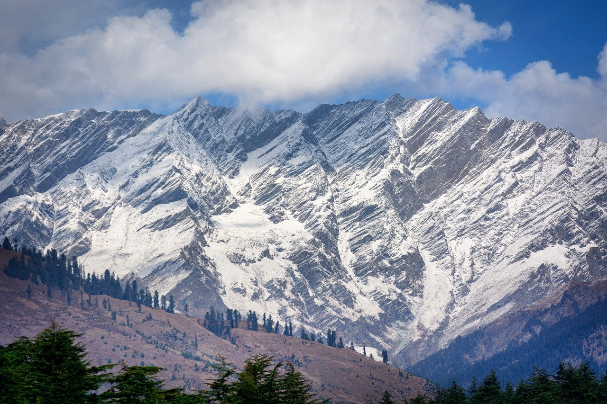Located in Kullu district, at an altitude of 2,050 meters, Manali captivates you with its snow-capped mountains and impressive views. Manali is one of the most beautiful places to visit in Himachal. Bring out your adventurous side by indulging in the sports activities as you give yourselves a visual treat. The visually pleasant atmosphere makes it one of the top tourist places in Himachal Pradesh.
Shimla
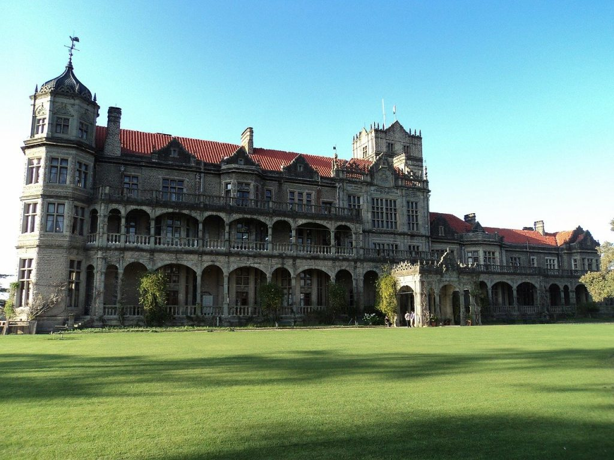A popular hill station which usually tops the list of places to visit in Himachal Pradesh, Shimla is at an elevation of 2,205 meters. Shimla is the capital and also the largest city of Himachal Pradesh. The lush green environs, scenic landscapes and the wonderful amalgamation of colonial heritage and nature make this place a real treat. The Viceregal Lodge, Christ Church, Shri Hanuman Jakhoo Temple, Ridge Road and Annadale are some of the popular attractions in Shimla making it one of the most recommended places to visit in Himachal Pradesh.
Kasol
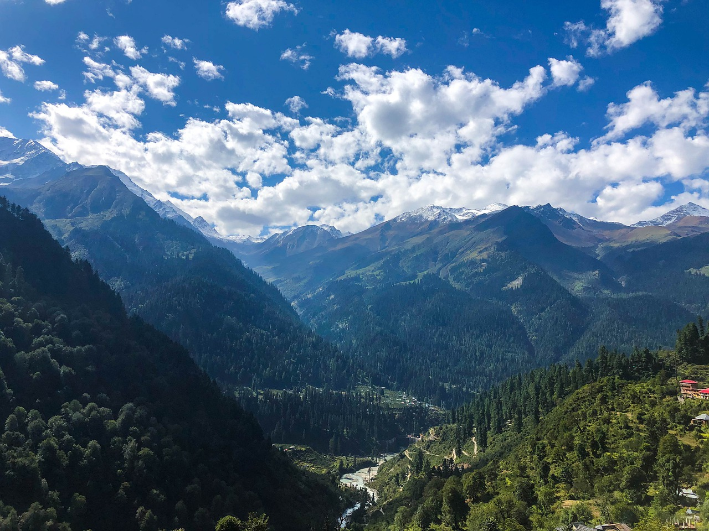Located in the Parvati Valley at an altitude of 1,650 meters, Kasol looks like a perfect picture come to life. It is slowly gaining massive popularity as one of the most popular tourist places in Himachal Pradesh and is a base camp for moderate treks in the state. This Himachal tourist places is best known for its thrilling treks, flavoursome Israeli food, alternative hippie lifestyle and culture and the streaming Parvati river. This makes Kasol one of the top contenders for must visit tourist places in Himachal.
Tirthan Valley
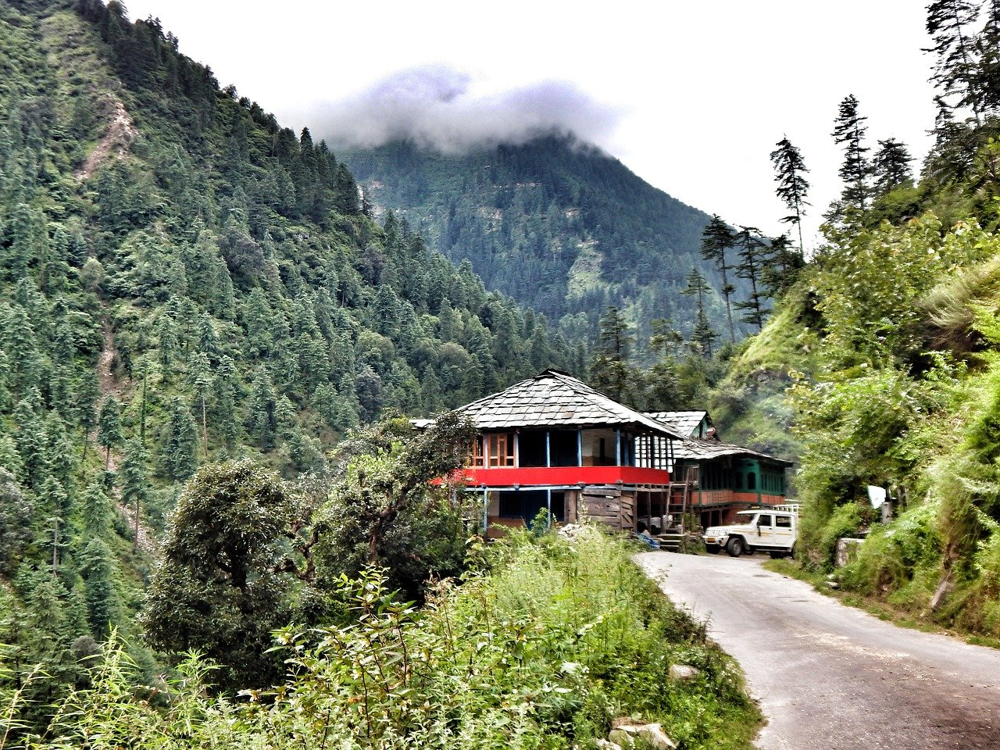If you want to experience surreal nature along with bone-chilling water cascading down rocky brooks, Tirthan Valley is one of popular places to visit in Himachal Pradesh. The valley is immensely beautiful, it gives you a chance to witness a beautiful rainbow or brown trout in the glacial waters. Trekking, overnight camping, river crossing, night treks, mountain biking, kayaking, and archery are the best ways to relish the picturesque magnificence of the Tirthan Valley.
Spiti
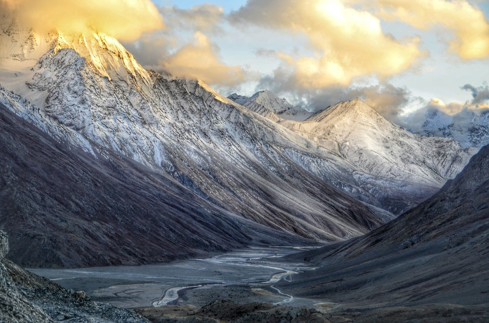One of the hidden beauties of North India is the Spiti Valley. Spiti Valley is a snow cladded desert mountain located high in the Himalayas in the north-eastern state of Himachal Pradesh. The name “Spiti” signifies as “The middle land” as the valley is situated between India and Tibet. Spiti Valley is one of the well-known tourist places in Himachal pradesh. This is where divine Buddhist destinations and a whole lot of traveller attractions are unveiled.
Dharamsala
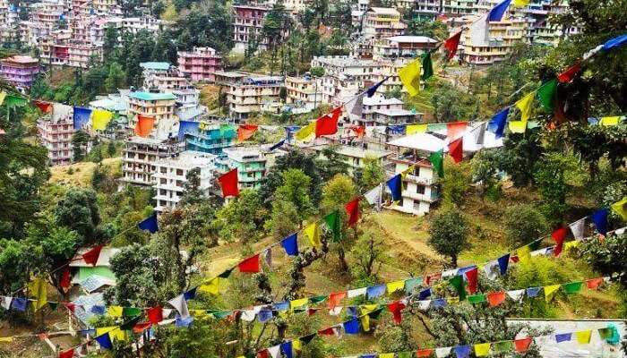Dharamshala definitely has to be on your list of best Himachal Pradesh destinations. Famous not only because of its climate but also you get to see how multicultural Indian community lives in harmony with the Indo Tibetan community.
Bir Billing
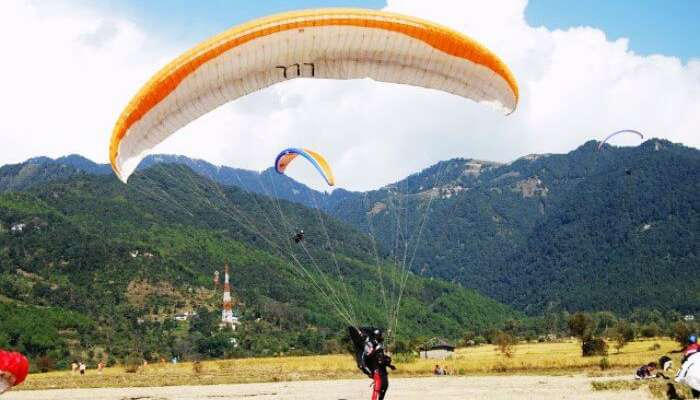If you’re an adventure seeker, Bir Billing is the mecca for adventure sports and it has to be on your list of the top Himachal Pradesh tourist places. Bir is a small village which is located on the western side of Himachal Pradesh and is blessed with some refreshing climate.
Malana
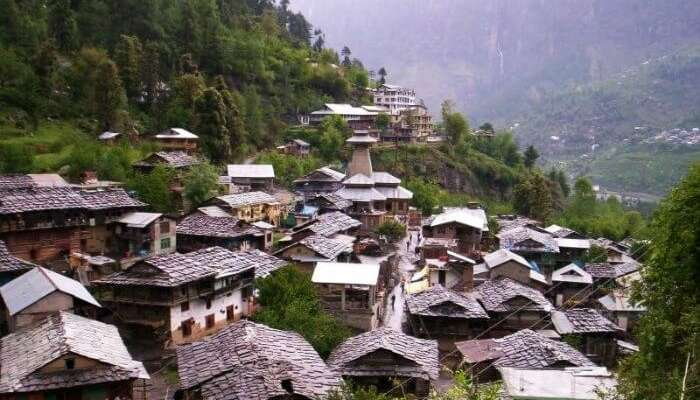Looking for a digital detox, then Malana is the place you must visit in Himachal Pradesh in August. Situated near the Kullu Valley, Malana provides spellbinding views of the Deo Tiba and Chandrakhani crests. It is indeed one of the best tourist places in Himachal Pradesh.
Dalhousie
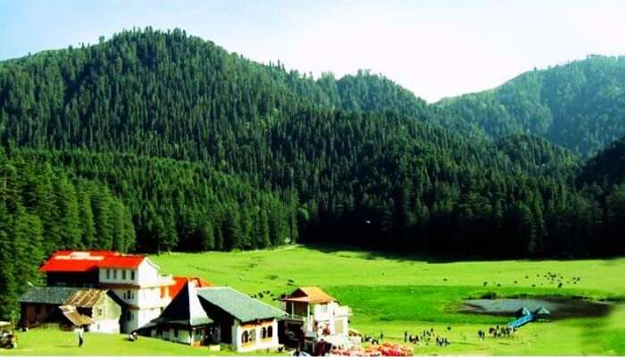Dalhousie is yet another hill station in Himachal Pradesh which is ideal for de-stressing in the serene, tranquil troposphere. Away from the hustle-bustle of the city life, sit back and enjoy the nature in Dalhousie, one of the top Himachal Pradesh tourist places. Don’t forget to explore the gorgeous places to visit in Dalhousie to get the best experiences of this place.
Khajjiar
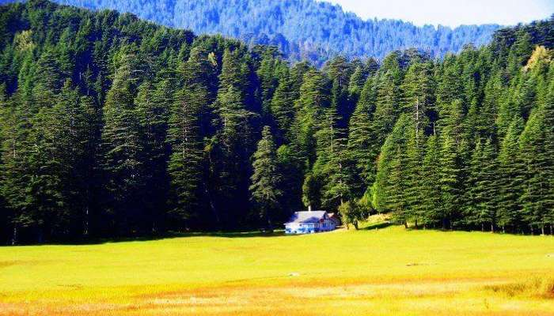Located in the Chamba district, this gorgeous valley is one of the best Himachal tourist places. Its indeed a great place to relax and unwind in the beautiful and refreshing environment.
Barot
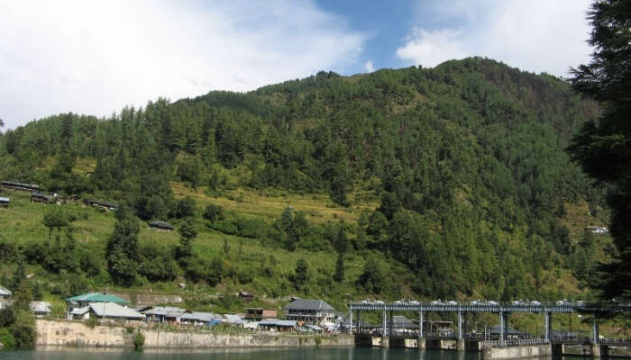Very few people know of Barot and the unexplored landscapes scattered here. For those looking for pristine destinations, this is the perfect place to be in the heart of beautiful Himachal Pradesh. Barot was popped up on the radar when, around 1920, the hydropower project Shanan was proposed in India. It was mainly proposed to utilize the hydropower potential of the Uhl between Barot and Joginderagar. Since then, it has become the best places to visit in Himachal Pradesh, but only a few people know about it.